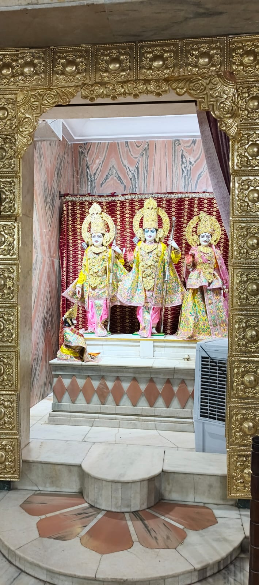
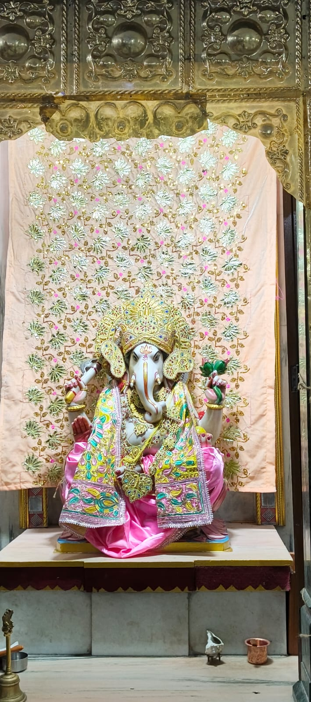
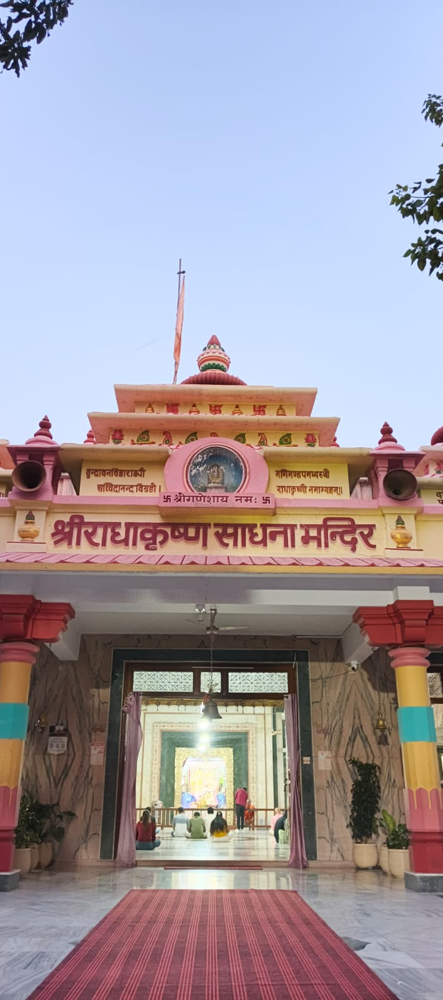
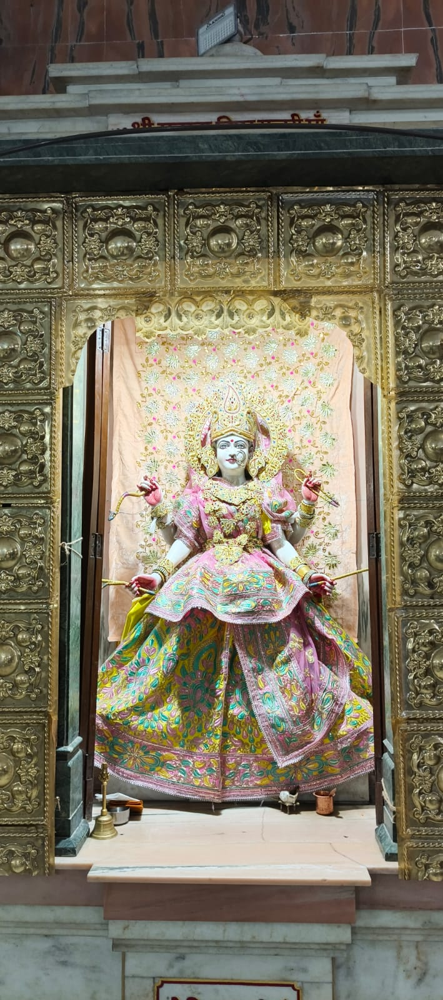
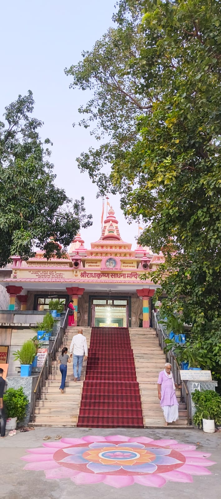
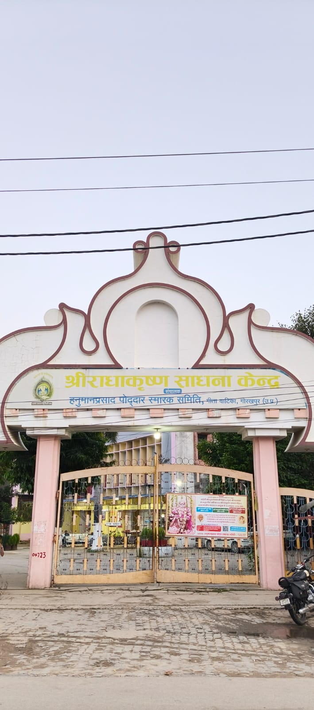

Geeta Vatika at a Glance
About Geeta Vatika
Geeta Vatika Temple is a renowned spiritual and religious center located on the Gorakhpur-Pipraich Road in Gorakhpur, Uttar Pradesh. The temple is dedicated primarilly to Lord Krishna and Goddess Radha and is known for its peaceful devotional atmosphere.
Geeta Vatika was established by Sant Hanuman Prasad Poddar, popularly known as Bhaiji. The land, formerly known as Goyandka Garden, was purchased in 1933, In 1945, Hanuman Prasad Poddar installed sacred images of Radharani, Kirtida Maiya and Lalita Ji at the site.
The main temple complex contains shrines dedicated to several Hindu deities and feature traditional Nagara-style architecture. It has 16 sanctums and 35 shikharas, making the complex an important part of Gorakhpur's religious and culture heritage.
Geeta Vatika is visited by devotees and tourists from different parts of India and abroad. Festivals such as Janmashtami and Radhaashtami are celebrated with devotional programs and gatherings, making it a notable spiritual destination in Gorakhpur.
A Place of Continuous Devotional
Geeta Vatika has an important place in the spiritual and religious heritage of Gorakhpur.
The District Gorakhpur website states that 24-hour Hare Rama Hare Krishna chanting began on the campus in 1968 and has continued.
The peaceful surroundings and devotional atmosphere make Geeta Vatika an important spiritual destination for visitors.
Things to See
Radha-Krishna Temple
The main attraction of Geeta Vatika is the temple dedicated to Radha and Lord Krishna.
Continuous Chanting
Devotional Hare Rama Hare Krishna chanting is associated with the campus throughout the day and night.
Peaceful Environment
The green surroundings and spiritual atmosphere provide a peaceful setting for visitors.
Spiritual Experience
Visitors can experience the devotional environment and learn about the spiritual heritage of the place.
Before You Visit
Geeta Vatika is a religious and spiritual place. Visitors should maintain cleanliness, respect the peaceful environment and follow the rules of the temple premises.
Specific visitor timings and arrangements can change. Please verify locally before travelling.
How to Reach Geeta Vatika
Find Geeta Vatika
Geeta Vatika is located on Gorakhpur-Pipraich Road near Asuran Chowk, Gorakhpur, Uttar Pradesh.
Open Google Maps ↗️Tips for Visitors
- Dress respectfully when visiting the temple.
- Maintain slience and respect the devotional atmosphere.
- Keep the premises clean.
- Follow temple rules and instructions.
- Check current arrangements before visiting.
Explore Geeta Vatika





